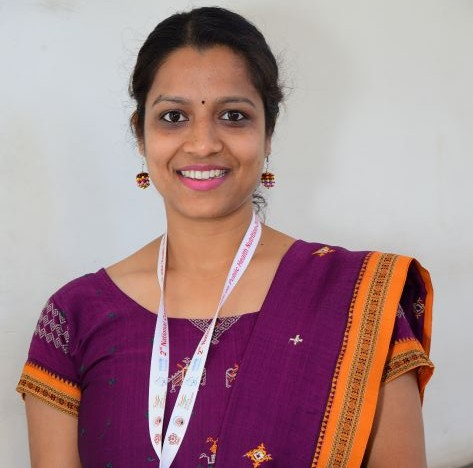

People


Dr. Sasmita Behera
Assistant Professor
Development economics and Healthcare Economics 1. Behera, S., & Pradhan, J. (2024). Distress financing associated with out-of-pocket expenditure for non-communicable diseases in India. International Journal of Healthcare Management, 1-13.…


Prof. Kavita Karan Ingale
Assistant Professor
financial literacy, household finance, consumer financial behavior, financial planningand investment management, sustainable consumption anf sustainable finance

Prof. Bhushan Rameshwar Shete
Assistant Professor
History, Indian Art and Culture, Economic History of India, Public Policy